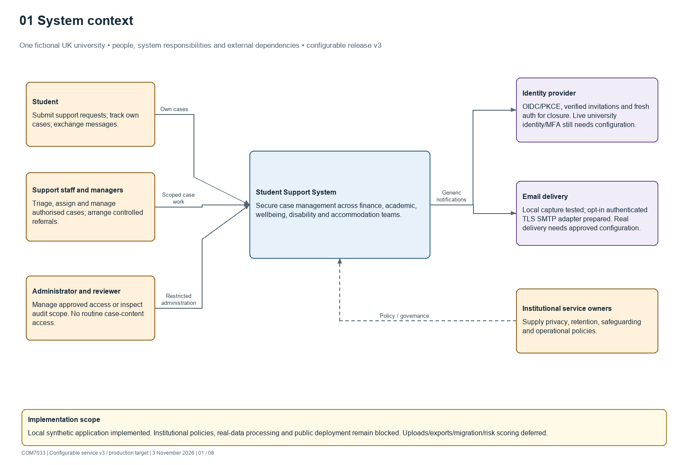
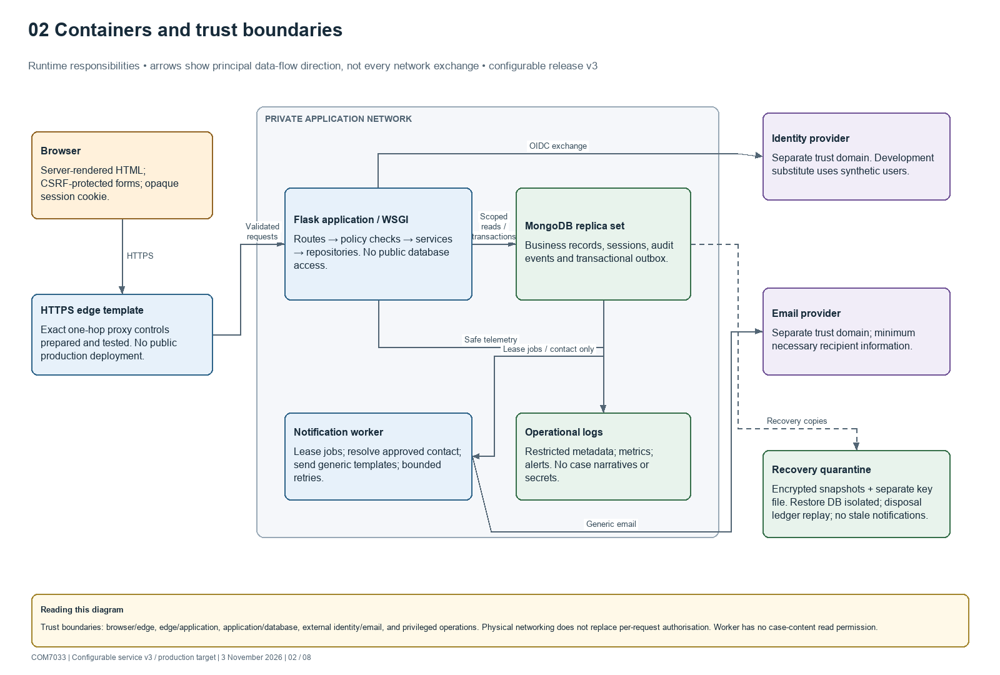
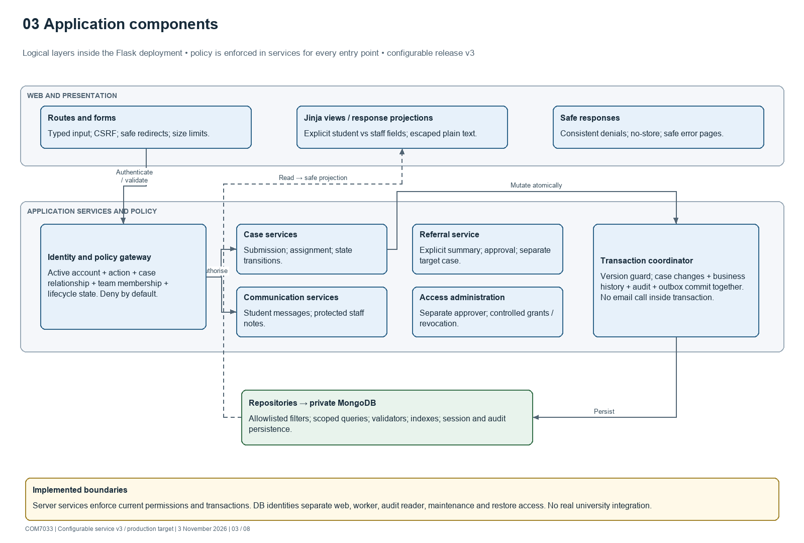
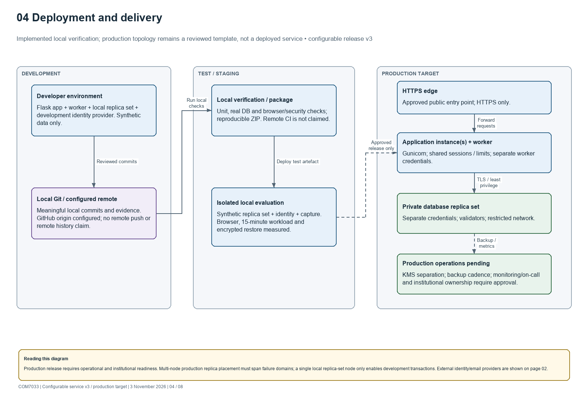
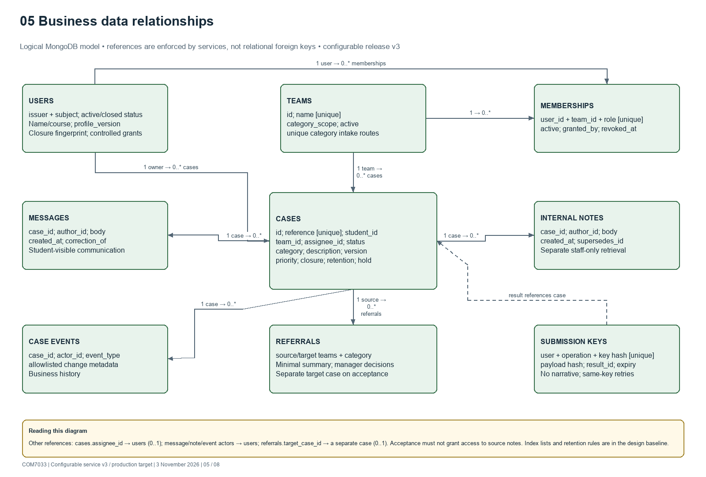
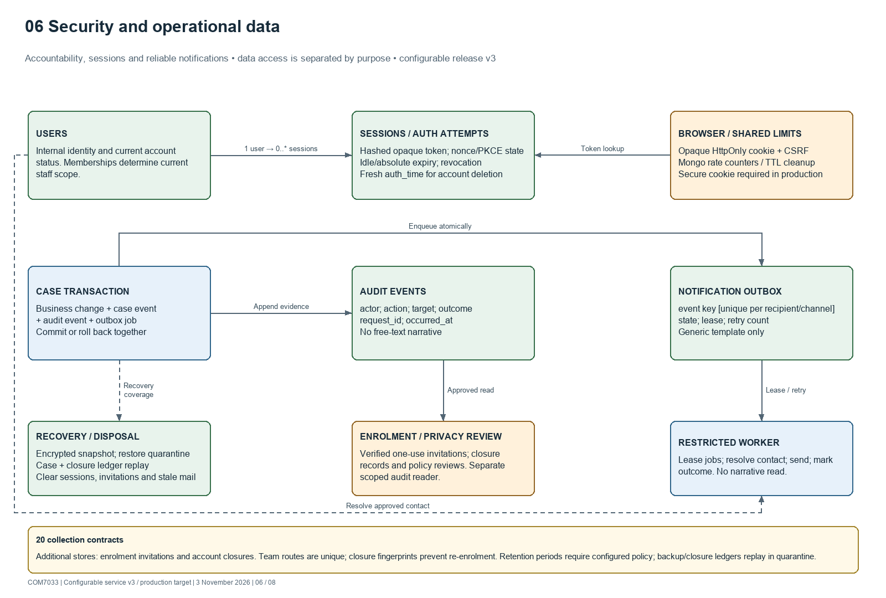
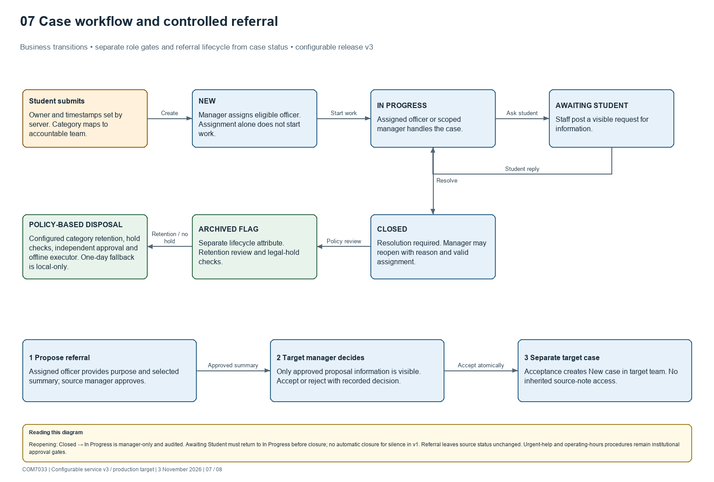
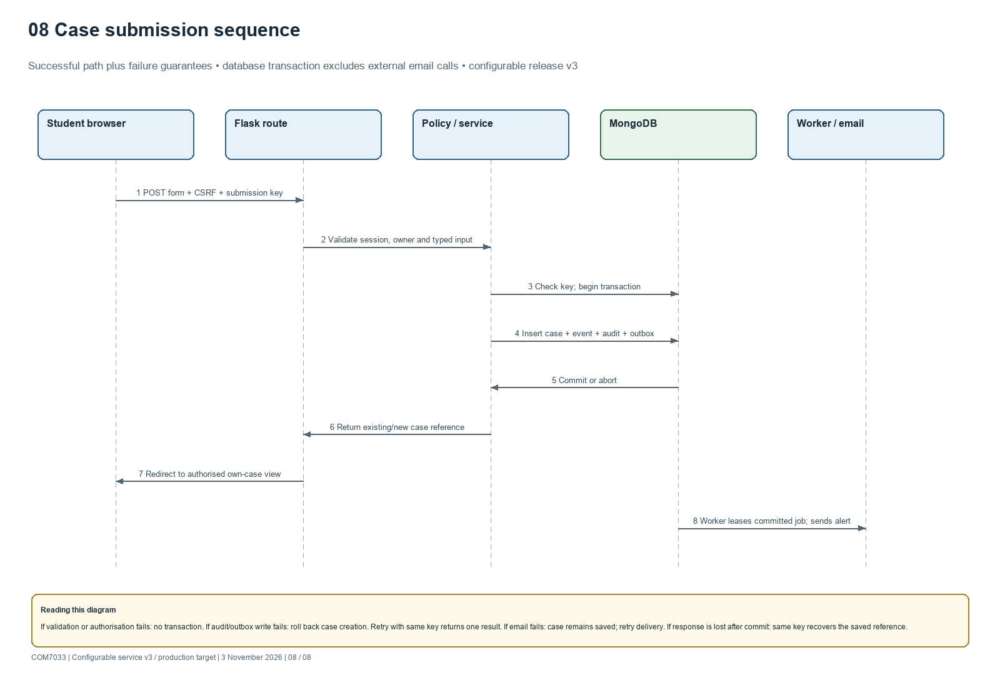

Student Support Architecture Diagrams
Eight reconciled views of the implemented local synthetic Flask/MongoDB demonstration and its undeployed production target. See current implementation status.
Download the editable draw.io file · Read the detailed design baseline
In diagrams.net / draw.io, choose File → Open From → Device and select the .drawio file. Each numbered view is a separate editable page. Shapes, connectors and labels are native diagram elements. PNG previews below use the same diagram model; draw.io may wrap text differently.
01 System context
One fictional UK university • people, system responsibilities and external dependencies • configurable release v3

02 Containers and trust boundaries
Runtime responsibilities • arrows show principal data-flow direction, not every network exchange • configurable release v3

03 Application components
Logical layers inside the Flask deployment • policy is enforced in services for every entry point • configurable release v3

04 Deployment and delivery
Implemented local verification; production topology remains a reviewed template, not a deployed service • configurable release v3

05 Business data relationships
Logical MongoDB model • references are enforced by services, not relational foreign keys • configurable release v3

06 Security and operational data
Accountability, sessions and reliable notifications • data access is separated by purpose • configurable release v3

07 Case workflow and controlled referral
Business transitions • separate role gates and referral lifecycle from case status • configurable release v3

08 Case submission sequence
Successful path plus failure guarantees • database transaction excludes external email calls • configurable release v3

Proposed integrations and operating policies require institutional review. Identity registration, lawful grounds, retention, safeguarding, hosting and production access owners remain open decisions in the design baseline.